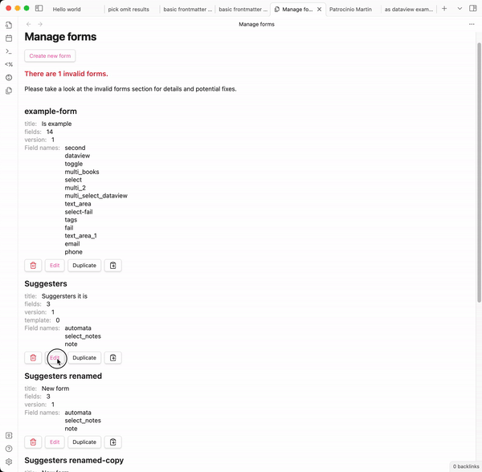
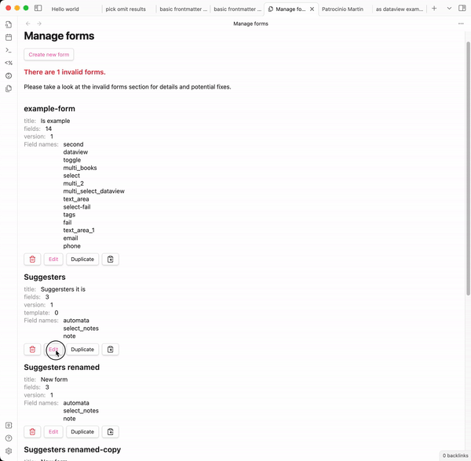
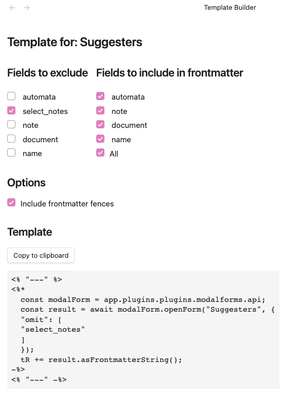
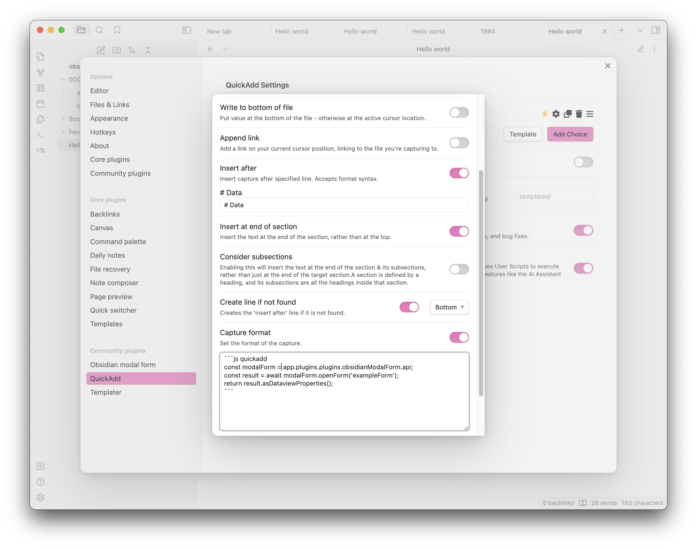

Obsidian Modal Form Plugin
This plugin for Obsidian allows you to define forms that can be opened from anywhere you can run JavaScript, so you can combine it with other plugins like Templater or QuickAdd.
Features
- Forms open in a modal window and return you the values, so you can trigger it from:
- Templater templates
- QuickAdd captures
- DataviewJS queries
- Many other places...
- Define forms using a simple JSON format
- Create and manage a collection of forms, each identified by a unique name
- User interface for creating new forms
- Create new notes directly from the form using templates
- Template editor has a nice UI for creating templates
- Register commands for your forms: Instantly trigger any form (with a template) from the command palette—no need for QuickAdd or external templates for simple use cases
- Many input types
- number
- date
- time
- slider
- toggle (true/false)
- free text
- text with autocompletion for note names (from a folder or root)
- text with autocompletion from a dataview query (requires dataview plugin)
- multiple choice input
- select from a list
- list of fixed values
- list of notes from a folder
 

Template builder
We have a nice UI to help you creating the required templates. 
Why this plugin?
Obsidian is a great tool for taking notes, but it is also a nice for managing data. However, when it's time to capture structured data it doesn't offer many conveniences. Some plugins like Templater or QuickAdd alleviate this problem with templates/automation that ease the creation of notes with a predefined structure, but then you have to fill the data manually. The mentioned plugins (Templater, QuickAdd) have some little convenience inputs, but they have certain tradeoffs/problems:
- they are limited to inputting a single value at a time
- they don't have labels or detailed descriptions about the field you are filling
- you can't skip fields, you will always be prompted for all of them one by one
All of the mentioned tools are great at their job and unleash super convenient workflows. For that reason, rather than offering an alternative, this plugin is designed as a complement to them, offering some basic building blocks that you can integrate with your existing templates and workflows.
Friends of modal form
Note: With the ability to register commands for your forms, you no longer need QuickAdd just to trigger a form. QuickAdd remains useful for more advanced workflows, but for simple form-triggering, Modal Forms is now a complete solution.
- Templater to open modals from templates
- QuickAdd to quickly capture data from a modal
- dataview to provide values for auto-completion
Scope of this plugin
This plugin is intentionally narrow in scope. As mentioned in the previous section, it is designed as a building block, so you can integrate it with other plugins and workflows. The only features that I will consider adding will be ones about improving the form itself.
Usage
Call the form from JavaScript
Since the main usage of this plugin is opening forms and getting back their data let's start with that. If you want to learn how to create forms, skip to the next section define a form.
The plugin exposes an API that can be accessed from any JavaScript code that has access to the global app object. So, in order to get the API you can do:
const modalForm = app.plugins.plugins.modalforms.api;
From here you can call any of the main methods of the API, openForm which allows you to open a form by name and get back the data. Let's see an example:
const modalForm = app.plugins.plugins.modalforms.api;
const result = await modalForm.openForm("example-form");
The result is a special type of object that contains the data of the form.
It also has some convenient methods to help you process the returned data.
One of them is asFrontmatterString, which returns the data as a string that can be used in a frontmatter block. Let's see an example using Templater:
Usage with Templater
---
<%*
const modalForm = app.plugins.plugins.modalforms.api;
const result = await modalForm.openForm('example-form');
tR += result.asFrontmatterString();
-%>
---
When you insert this template in a note, it will open the form, and once you submit it, it will insert the data in the note as a frontmatter block.
Usage with QuickAdd
In order to open a form from QuickAdd capture, you need to create a capture and activate the capture format, then in the format text-area you must create a code block with the language defined as js quickadd and copy the code below:
```js quickadd
const modalForm = app.plugins.plugins.modalforms.api;
const result = await modalForm.openForm('example-form');
return result.asDataviewProperties();
```
Here you have an example screenshot of how it should look like: 
Providing Default Values When Opening a Form
When opening a form you can provide default values for the form fields. This can be done by passing an object to the openForm or limitedForm methods as part of the FormOptions parameter. This object should have the same structure as the form definition, with each key corresponding to a field name and its value being the default value for that field.
Here's an example:
const values = {
title: "My Default Title",
description: "This is a default description.",
};
const modalForm = app.plugins.plugins.modalforms.api;
const result = await modalForm.openForm("example-form", { values: values });
In this example, the form will open with the title field pre-filled with My Default Title and the description field pre-filled with This is a default description..
Note: If a field in the default values object does not exist in the form definition, it will be ignored.
FormResult Methods
When you open a form, you get back a FormResult object. This object contains the data of the form and some methods to help you process it.
This FormResult object returned by the openForm method has several methods that can be used to process the form data. Here is a brief description of each method:
asFrontmatterString()
This method returns the form data as a string that can be used in a frontmatter block. It formats the data in YAML syntax. Here is an example of how to use it:
asDataviewProperties()
This method returns the form data as a string of dataview properties. Each key-value pair in the form data is converted into a string in the format key:: value. Here is an example of how to use it:
getData()
This method returns a copy of the form data. It can be used when you need to manipulate the form data without affecting the original data.
asString(template: string)
This method returns the form data formatted as a string matching the provided template. The template is a string that can contain placeholders in the format {{key}}, which will be replaced with the corresponding value from the form data. Here is an example of how to use it in a templater template:
<%*
const modalForm = app.plugins.plugins.modalforms.api;
const result = await modalForm.openForm('example-form');
tR += result.asString('{{name}} is {{age}} years old and his/her favorite food is {{favorite_meal}}. Family status: {{is_family}}');
-%>
Advanced usage
For more advanced usage of the FormResult methods please refer to the specific documentation of FormResult here
Define a form
Create a new form
Creating a new form is easy, you just need to open the manage forms view, either by clicking on the ribbon icon or by using the command palette (Obsidian modal form: New form).
Once there, click on the + button and you will be presented with a form to create a named form definition.
The form is self-explanatory, but here are some key points you need to keep in mind:
- The name must be unique, and it will be used to identify the form when you open it from JavaScript, case-sensitive
- The title is what you will see as a header in the modal window when you open the form
- You will not be able to save the form unless all the fields are valid (which means they have a name and a type)

Dataview integration
Modal Form integrates with Dataview to provide powerful data querying capabilities in your forms. You can use Dataview queries to:
- Create dynamic input fields with suggestions from your vault
- Generate dynamic content in document and markdown blocks based on form data
- Create interactive previews that update as users fill out the form
For detailed documentation and examples, see Dataview Integration.

Inline forms
The plugin also supports inline forms, which are forms that are defined when you call the openForm method. This is useful when you want to create a form that is only used in one place and it is simple enough. However, note the format is a bit verbose for typing it manually and it is error-prone, so unless it is a very small form, you will most likely prefer to use a named form.
Here is an example of how to use it:
const modalForm = app.plugins.plugins.modalforms.api;
const result = await modalForm.openForm({
title: "Example form",
fields: [
{
name: "name",
label: "Name",
description: "Your name",
input: { type: "text" },
},
{
name: "age",
label: "Age",
description: "Your age",
input: { type: "number" },
},
{
name: "favorite_meal",
label: "Favorite meal",
description: "Your favorite meal",
input: { type: "text" },
},
{
name: "is_family",
label: "Is family",
type: "toggle",
description: "Are you family?",
required: true,
input: { type: "toggle" },
},
],
});
You can make it smaller by removing some of the optional fields like description or label, but I really encourage you to define them all.
Using Templates and Triggering Forms via Commands
You can enhance your forms with templates, allowing you to generate dynamic note content or insert text based on form responses. When you add a template to a form, you can also register dedicated commands to trigger that form directly from Obsidian's command palette—no extra plugins or scripting needed.
How it works:
- Edit a form and go to the Template tab.
- Create or edit your template.
- Enable one or both command options:
- "Create command to insert template": lets you insert the template output into the current note after submitting the form.
- "Create command to create note from template": lets you create a new note from the template after form submission.
- Save the template. The commands will be registered and available in the command palette as:
Modal Forms: Insert template: [Form Name]Modal Forms: Create note from template: [Form Name]
This makes it easy to trigger forms and use their templates anywhere with just a command—perfect for quick note creation or structured data capture.
For details on template syntax and advanced features, see the Templates documentation.
Tips and tricks
Installing the plugin
You can install the plugin directly from the Obsidian plugin store or through BRAT
Installing with BRAT
- Install the BRAT plugin (GitHub page) and enable it.
- Open the command palette and run the command BRAT: Add a beta plugin for testing.
- Enter
https://github.com/danielo515/obsidian-modal-forminto the modal and press the Add Plugin button. - Return to the settings and navigate to the Community plugins tab.
- Enable the plugin.
Manually installing the plugin
- Copy over
main.js,styles.css,manifest.jsonto your vaultVaultFolder/.obsidian/plugins/modalForm/.
How to develop
- Clone this repo.
- Make sure your NodeJS is at least v16 (
node --version). npm ioryarnto install dependencies.npm run devto start compilation in watch mode.
Releasing new releases
- run
npm version patch,npm version minor, ornpm version majorafter updatingminAppVersionmanually inmanifest.json. - Upload the files
manifest.json,main.js,styles.cssas binary attachments. Note: The manifest.json file must be in two places, first the root path of your repository and also in the release. - Publish the release.
The command
npm version whateverwill bump version inmanifest.jsonandpackage.json, and add the entry for the new version toversions.json
Publish docs
We use mkdocs to generate the documentation. To publish the docs, run:
```bash ./build-docs.sh